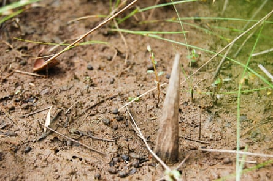
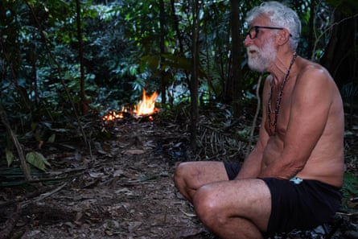
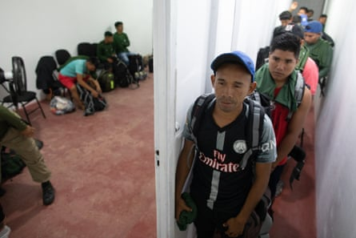

Remarkable images taken by automatic cameras in the Brazilian rainforest reveal an isolated community that appears to be thriving despite pressure from ranchers and illegal encroachment into the Amazon.
The pictures , of a group of men, offer the outside world its first glimpse of the community – and give further evidence the population is growing. The group is known as the Massaco after the river that runs through their lands, but no one knows what they call themselves, while their language, social fabric and beliefs remain a mystery.
Despite unrelenting pressure from agribusiness, loggers, miners and drug traffickers, the Massaco have at least doubled since the early 1990s – to an estimated 200 to 250 people – according to the Brazilian National Indigenous Peoples Foundation (Funai), which has been working for decades to protect the territory. Funai placed the cameras at a spot where it periodically leaves metal implements as gifts, a practice used to dissuade uncontacted people from venturing into farms or logging camps to get tools – as has happened in the past with tragic consequences . Photos of Massaco settlements have been captured previously during Funai expeditions into areas that satellite imagery confirmed had been abandoned.
Massacos use camouflaged foot and tyre-piercing solid wood spikes to deter strangers.Photograph: Funai
Years of such indirect observation meant the Massaco were known to hunt with bows that are three metres long, and to move their villages around from season to season within the forest. They discourage outsiders by planting thousands of foot and tyre-piercing spikes in the ground.
“Now, with the detailed photographs, it’s possible to see the resemblance to the Sirionó people, who live on the opposite bank of the Guaporé River, in Bolivia,” says Altair Algayer, a government agent with Funai who has spent more than three decades protecting the Massaco’s territory. “But still, we can’t say who they are. There’s a lot that’s still a mystery.”
Despite the demographic catastrophe of Indigenous populations caused by centuries of non-Indigenous occupation and worsening environmental devastation , population growth among isolated peoples is a trend across the Amazon. In 2023, the science journal Nature revealed growing populations along Brazil’s borders with Peru and Venezuela. Satellite images showed larger cultivated plots and expanded longhouses.
Jair Candor on an expedition in the territory of the Pardo River Kawahiva in Mato Grosso state. The fire in background is to keep stinging ants out of camp.Photograph: John Reid/The Guardian
Specialists have also seen evidence in the forest of similar growth among nomadic communities that do not plant crops or build large structures visible from space. One such group is the Pardo River Kawahiva, overseen for Funai by Jair Candor, in Mato Grosso state. “Today, we estimate there are 35-40 people. When we started working here, in 1999, there were about 20,” Candor said.
This bucking of a global trend of cultural loss and disappearing languages has been accomplished by the innovative public policy of not initiating contact – which was pioneered by Brazil in 1987 after decades of government-led contact killed more than 90% of those contacted , mostly from disease. Since then, Peru, Colombia, Ecuador, and Bolivia have adopted versions of the approach.
There are 61 confirmed groups living in the Amazon and Gran Chaco region, with a reported 128 not yet verified by authorities, according to a draft report by the International Working Group of Indigenous Peoples in Isolation and Initial Contact . The report’s author, Antenor Vaz, was one of the first to implement no-contact in Massaco in 1988. He said Brazil has excelled in developing best practices in the field but has no law specifically protecting isolated peoples.
“Peru and Colombia have robust legislation,” said Vaz. “In Brazil and other parts of the continent, the steamroller of agribusiness and other predatory forces are prevailing over laws and Indigenous rights.”

In 2011 Survival International released this picture thought to be of an uncontacted people. It was taken from a Brazilian aircraft near the border with Peru.Photograph: Gleison Miranda/AFP
Neighbouring Indigenous communities are playing a role in protecting their more isolated peers. Examples include the Manchineri along the Peru-Brazil border in Acre state, the Amondawa in Rondônia and the Guajarara at the basin’s other extreme in the eastern state of Maranhão.
In the Javari valley – which has 10 confirmed uncontacted communities, the most of any Amazonian Indigenous territory – Beto Marubo, a representative of the Union of Indigenous Peoples of the Javari valley, and local leaders set up a patrol team in 2021, which won the UN Equator Prize . While Indigenous-led legal action has also helped the cause.
However, to honour the land rights of isolated peoples, as required by Brazil’s constitution, and to put logging, gold, fish, soya bean and coca planting off limits, means proving the people are there. Marubo said that the first argument for those interested in grabbing forest areas is to negate the existence of inhabitants. “The principle strategy for invaders and anyone with an interest in the lands where isolated peoples live is to deny they exist.”
Funai operates with chronically insufficient funds and a small group of unarmed field staff. They face risk including all-too-genuine death threats, like those directed at Bruno Pereira, murdered in 2022, along with journalist Dom Phillips . And while some isolated peoples are thriving, others are dwindling in territories overrun by outsiders .
Young Indigenous people from the Javari valley register for the Univaja Indigenous Defenders training course, which the late indigenist Bruno Pereira helped create.Photograph: João Laet/The Guardian
“These peoples have a right to live, to their land, and chosen lifestyles, but respecting the rights of isolated Indigenous peoples is also fundamental to preserving tropical forests,” said Paulo Moutinho, co-founder of the Institute for Environmental Research in the Amazon .